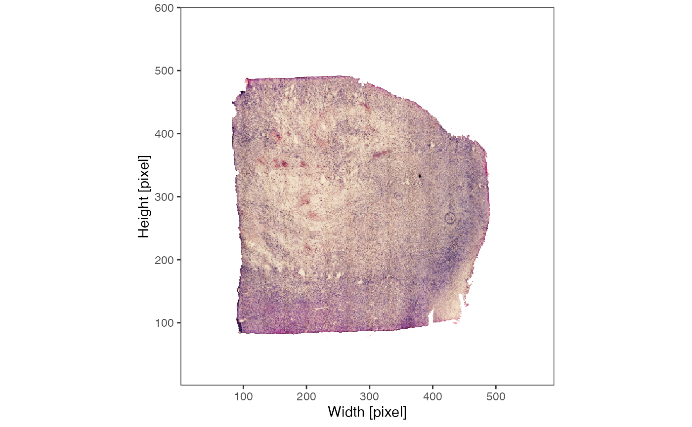
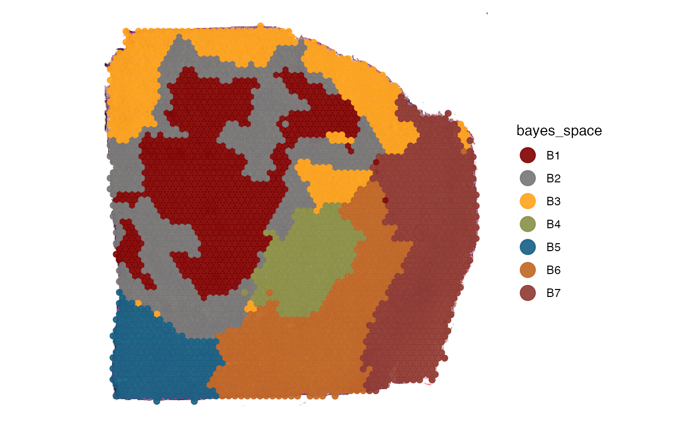
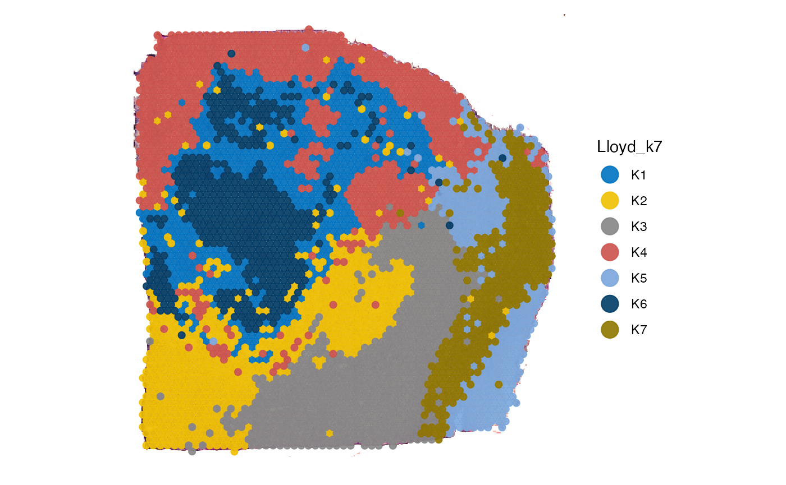
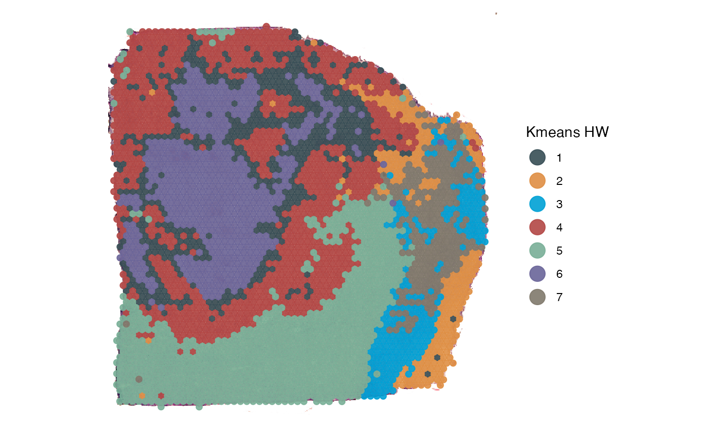

clustering.RmdGrouping variables divide the observations of the sample into groups whose properties can be compared against each other. For instance, the grouping of observations can be the result of clustering algorithms or manual spatial segmentation. This tutorial shows how to apply and add clustering in SPATA2.
# load required packages
library(SPATA2)
library(SPATAData)
library(tidyverse)
# load SPATA2 object
object_t313 <- downloadSpataObject(sample_name = "UKF313T")
# alternatively, use diet version (results might differ slightly)
object_t313 <- loadExampleObject(sample_name = "UKF313T", process = TRUE)
# show sample
plotImage(object_t313)
There are several algorithms out there that can be used to divide
your sample into subgroups. SPATA2 provides wrappers around several
clustering algorithms. Cluster algorithms that add their results
immediately to the SPATA2 object are prefixed with with
run-* and suffixed with *-Clustering(). E.g.
runBayesSpaceClustering(),
runKmeansClustering(),
runSeuratClustering().
# current grouping options
getGroupingOptions(object_t313)## factor
## "tissue_section"Argument name or naming specifies the name
of the output grouping variable. The resulting grouping variable names
are available with getGroupingOptions().
# run the pipeline
object_t313 <-
runBayesSpaceClustering(
object = object_t313,
name = "bayes_space", # the name of the output grouping variable
qs = 5
)
# run PCA based on which clustering is conducted
object_t313 <- runPCA(object_t313, n_pcs = 20)
object_t313 <-
runKmeansClustering(
object = object_t313,
ks = c(7, 8),
methods_kmeans = "Lloyd"
)
# results are immediately stored in the objects feature data
getGroupingOptions(object_t313)## factor factor factor factor
## "tissue_section" "seurat_clusters" "bayes_space" "Lloyd_k7"
## factor
## "Lloyd_k8"
# left plot
plotSurface(
object = object_t313,
color_by = "bayes_space",
pt_clrp = "uc"
)
# right plot
plotSurface(
object = object_t313,
color_by = "Lloyd_k7",
pt_clrp = "jco"
)
Clustering can result from a multitude of cluster algorithms. If they
are not implemented in SPATA2 functions you can add them using the
addFeatures() function.
# uses kmeans outside of SPATA2
kmeans_res <-
stats::kmeans(
x = getPcaMtr(object_t313),
centers = 7,
algorithm = "Hartigan-Wong"
)
head(kmeans_res[["cluster"]])## AAACAAGTATCTCCCA-1 AAACAATCTACTAGCA-1 AAACACCAATAACTGC-1 AAACAGAGCGACTCCT-1
## 3 5 6 3
## AAACAGCTTTCAGAAG-1 AAACAGGGTCTATATT-1
## 1 6
cluster_df <-
as.data.frame(kmeans_res[["cluster"]]) %>%
tibble::rownames_to_column(var = "barcodes") %>%
magrittr::set_colnames(value = c("barcodes", "kmeans_4_HW")) %>%
tibble::as_tibble()
cluster_df[["kmeans_4_HW"]] <- as.factor(cluster_df[["kmeans_4_HW"]])
cluster_df## # A tibble: 3,517 × 2
## barcodes kmeans_4_HW
## <chr> <fct>
## 1 AAACAAGTATCTCCCA-1 3
## 2 AAACAATCTACTAGCA-1 5
## 3 AAACACCAATAACTGC-1 6
## 4 AAACAGAGCGACTCCT-1 3
## 5 AAACAGCTTTCAGAAG-1 1
## 6 AAACAGGGTCTATATT-1 6
## 7 AAACATGGTGAGAGGA-1 4
## 8 AAACCCGAACGAAATC-1 2
## 9 AAACCGGGTAGGTACC-1 6
## 10 AAACCGTTCGTCCAGG-1 1
## # ℹ 3,507 more rowsOnly requirement is a barcodes variable to map the groups to the observations. Note that a variable must be of class factor in order to be recognized as a grouping variable.
# grouping options before adding
getGroupingOptions(object_t313)## factor factor factor factor
## "tissue_section" "seurat_clusters" "bayes_space" "Lloyd_k7"
## factor
## "Lloyd_k8"
# add the cluster results to the meta features
object_t313 <-
addFeatures(
object = object_t313,
feature_df = cluster_df
)
# grouping options names afterwards
getGroupingOptions(object_t313)## factor factor factor factor
## "tissue_section" "seurat_clusters" "bayes_space" "Lloyd_k7"
## factor factor
## "Lloyd_k8" "kmeans_4_HW"Continue by visualizing your results or by investigating their transcriptional characteristics using differential expresseion analysis (DEA)).
plotSurface(
object = object_t313,
color_by = "kmeans_4_HW",
pt_clrp = "jama"
) +
labs(color = "Kmeans HW")